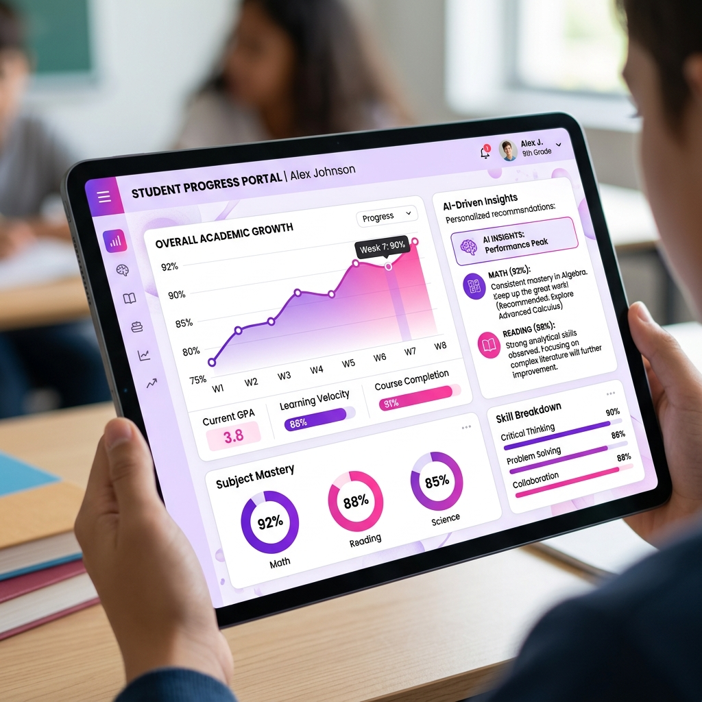

The traditional Learning Management System (LMS) is undergoing a massive transformation. By 2026, the focus has shifted from mere "content delivery" to "intelligent competency mastery."
The Shift from Static to Dynamic Tracking
For years, LMS platforms were glorified file repositories. Students would watch a video, take a multiple-choice quiz, and receive a digital certificate. But this model fails to answer the most critical question for employers: Can this person actually perform the task?

In 2026, AI-driven competency tracking solves this by analyzing granular user interactions. Instead of just tracking "completion," modern systems track "demonstration."
Key AI Innovations in Modern LMS
- Predictive Skill Gap Analysis: AI identifies where a student will struggle before they even reach a difficult module, providing pre-emptive resources.
- Real-time Feedback Loops: Using Natural Language Processing (NLP), systems can grade complex essay responses or code submissions instantly with human-like nuance.
- Micro-Personalization: Every learner's path is unique. If a student excels in visual learning, the AI prioritizes video content and interactive diagrams.
Implementing AI in Your Organization
Transitioning to an AI-driven LMS doesn't require a total overhaul. At WelkinGetter, we recommend a phased approach:
- Data Consolidation: Clean up your existing user data to ensure the AI has a solid foundation to learn from.
- Pilot Competency Mapping: Start with a single department and map specific job roles to granular skills.
- Integrate Predictive Analytics: Layer AI tools on top of your current LMS to begin identifying patterns.
Conclusion
As we move further into 2026, the gap between "trained" and "competent" will continue to narrow. For businesses, the ROI of an AI-driven LMS isn't just in saved time—it's in the precision of their workforce's capabilities.